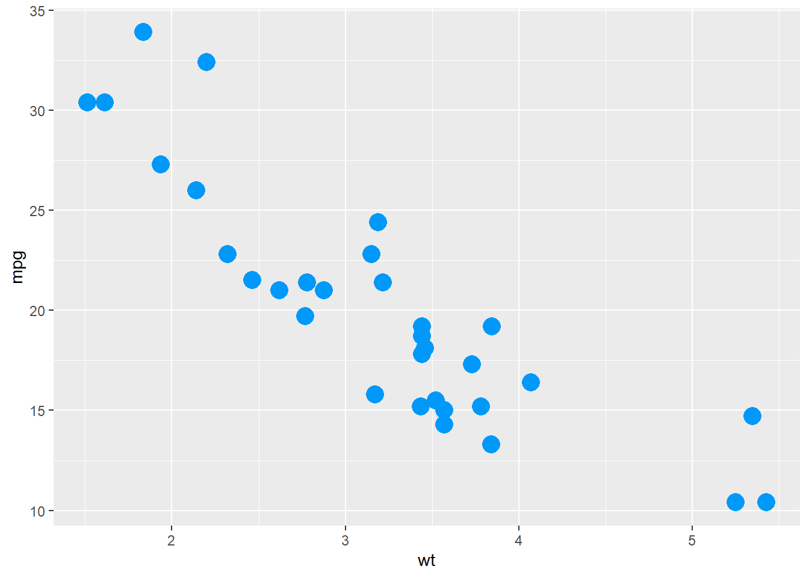

C:\Users\USER\AppData\Local\Programs\Quarto\Manual General de Quatro
Generaliades
Tomado de Tutorial de Dario Radecic
Manuales con opciones de edición de Quatro
Descarga de la aplicación Quatro
Dirigirse al sitio web y descargar la opción del sistema operativo requerido, en este enlace
La aplicación queda alojada en este directorio:
Una vez instalado, iniciar RStudio y crear un archivo de texto text file guardar el documento en extensión qmd como quatro.qmd
library(tidyverse)
library(palmerpenguins)Incluir el siguiente YAML
---
title: "Manual General de Quatro"
author: "Javier Rodríguez Barrios"
date: "13/03/2023"
lang: "es-ES"
---Con el botón Render se obtiene la vista previa del documento. Con la casilla de verificación “Procesar al guardar” se obtienen las previsualizaciones de forma automática.
Renderización con la consola de R
install.packages("quarto")
quarto::quarto_render("notebook.Rmd") # Este comando fallaTabla de renderizado en cuarto
MTCars
Table below shows the first six rows from the MTCars dataset
head(mtcars) mpg cyl disp hp drat wt qsec vs am gear carb
Mazda RX4 21.0 6 160 110 3.90 2.620 16.46 0 1 4 4
Mazda RX4 Wag 21.0 6 160 110 3.90 2.875 17.02 0 1 4 4
Datsun 710 22.8 4 108 93 3.85 2.320 18.61 1 1 4 1
Hornet 4 Drive 21.4 6 258 110 3.08 3.215 19.44 1 0 3 1
Hornet Sportabout 18.7 8 360 175 3.15 3.440 17.02 0 0 3 2
Valiant 18.1 6 225 105 2.76 3.460 20.22 1 0 3 1Gráfico de renderizado con cuarto
Hacer referencia a la figura con:
@figure-nameen el texto y luego la leyenda.Agregar títulos a las figuras con:
#| label: fig-mtscatter
@fig-mtscatter shows a relationship between `wt` and `mpg` features in the MTCars dataset.
````{r}
#| label: fig-mtscatter
#| fig-cap: Weight of vehicle per 1000lbs (wt) vs. Miles/Gallon (mpg)
library(ggplot2)
ggplot(mtcars, aes(x = wt, y = mpg)) +
geom_point(color = "#0099f9", size = 5)La Figura 1 muestra la relación entre las características wt y mpg en la base de datos MTCars.
library(ggplot2)
ggplot(mtcars, aes(x = wt, y = mpg)) +
geom_point(color = "#0099f9", size = 5)
Exportar los documentos de R Quatro
1) Documentos Word.
Más opciones de referencias aquí: manual de referencia completo
---
title: "Manual General de Quatro"
author: "Javier Rodríguez Barrios"
date: 'actualizado: `r Sys.Date()`'
lang: "es-ES"
format:
docx:
toc: true
toc-depth: 2
toc-title: Table of contents
number-sections: true
highlight-style: github
---Otras opciones de ajustes del YAML y del documento, en los siguientes enlaces:
2) Documentos pdf.
Se recomienda instalar TinyTeX, se recomienda ejecutar esta línea desde el shell:
quarto tools install tinytexLuego se requiere ajustar el YAML cambiando docx por pdf
Otras opciones de ajustes del YAML y del documento, en los siguientes enlaces:
3) Documentos html
---
title: "Manual General de Quatro"
author: "Javier Rodríguez Barrios"
date: 'actualizado: `r Sys.Date()`'
lang: "es-ES"
format:
html:
toc: true
html-math-method: katex
css: styles.css
---Otras opciones de ajustes del YAML y del documento, en los siguientes enlaces:
4) Libros html
Admiten las mismas funciones de las páginas web Ver enlace páginas web, excepto que usan números de capítulos y por lo cual usan referencias cruzadas. Ejemplo de libro en quatro
---
project:
type: book
book:
title: "Manual General de Quatro"
author: "Javier Rodríguez"
date: "8/18/2021"
chapters:
- index.qmd
- intro.qmd
- summary.qmd
- references.qmd
bibliography: references.bib
format:
html:
theme: cosmo
pdf:
documentclass: scrreport
epub:
cover-image: cover.png
---Otras opciones de ajustes del YAML y del documento, en los siguientes enlaces: